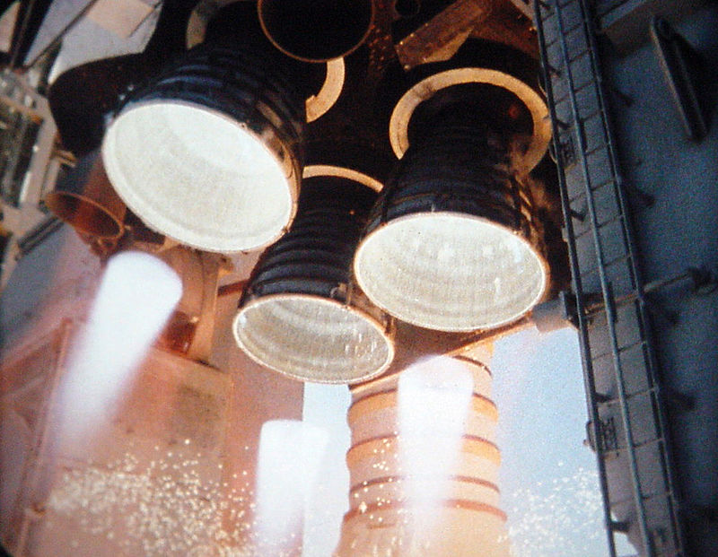
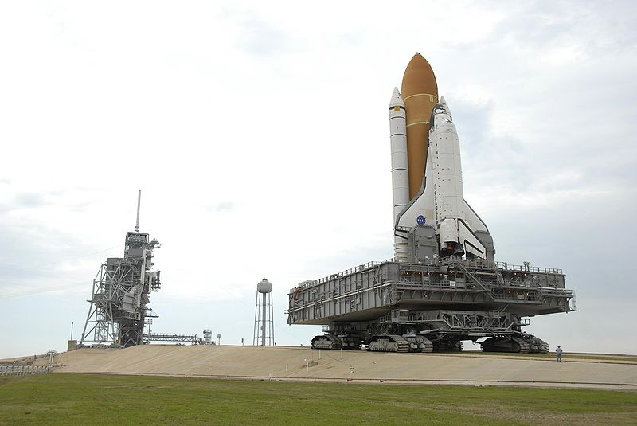
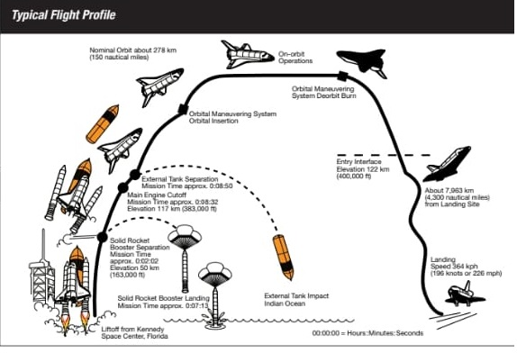

The Space Shuttle was a partially reusable low earth orbital space craft system operated from 1981 to 2011 by National Aeronotics and Space Admisnistration (NASA) as a part of the space shuttle program. The offical program name was space transportation system (STS) .Five complete Space Shuttle orbiter vehicles were built and flown on a total of 135 missions from 1981 to 2011 , launched from Kennedy space Center (KSC) in Florida . Operational missions launched numerous satelites , Interplanetary probes , and the Hubble Space Telescope(HST) , conducted science experiments in orbit and participated in the contruction and servicing of the International Space Station (ISS) . The space Shuttles total mission time was 1322 days , 19 hours , 21 minutes and 23 seconds .
The Space Shuttle flew from April 12 1981 until July 21 , 2011 . Throughout the program the space shuttle had 137 missions of which 135 returned safely . Throughout the life time , Space shuttle was used to conduct Scientific Research , Deploy Commercial , Military and Scientific Payloads and was involved in the construction and operation of International Space Station (ISS) . During its tenune , the space shuttle served as the only US vehicle to launch Astranauts of which there was no replacement until the launch of Crew Dragon Demo 2 on May 30 , 2020 .
Space Shuttle Components include three clustered vehicle (CV) which contained the crew and the payload with three clustered Rocket dyne RS-25 main engines , a pair of recoverable solid rocket boosters (SRBs) and the expandable external tank (ET) containing liquid hydrogen and liquid oxygen .
Shuttle was launched verticallty , like a conventional rocket , with the two SRBs operating in parallel with the Orbiters three main engines , which were fueled from ET . The SRBs were Jettisoned before the vehicle reached orbit , which used the Orbiters two orbital Maneuvering System (OMS) . After the conclusion of the mission, the orbiter fired its OMS to deorbit and reenter the atmosphere. The orbiter was protected during reentry by its thermal protection system tiles, and it glided as a spaceplane to a runway landing, usually to the Shuttle Landing Facility at KSC, Florida, or to Rogers Dry Lake in Edwards Air Force Base, California. If the landing occurred at Edwards, the orbiter was flown back to the KSC on the Shuttle Carrier Aircraft, a specially modified Boeing 747.
  First Orbiter , Enterprise , was built in 1976 , It had no orbital capability . Fourfully operational orbiters were initially built ; Columbia , Challenger , Discovery and Atlantis . Of these , Two were lost in mission accidents , Challenger in 1986 and Columbia in 2003 , with a total of 14 Astronouts were killed . A Sixth operational orbiter Endeaver was built in 1991 to replace Challenger . The retirement of NASA's Space Shuttle fleet took place from March to July 2011. Discovery was the first of the three active Space Shuttles to be retired, completing its final mission on March 9, 2011; Endeavour did so on June 1. The final shuttle mission was completed with the landing of Atlantis on July 21, 2011, closing the 30-year Space Shuttle program. The Shuttle was presented to the public in 1972 as a "space truck" which would, among other things, be used to build a United States space station in low Earth orbit in the early 1990s and then be replaced by a new vehicle. When the concept of the U.S. space station evolved into that of the International Space Station, which suffered from long delays and design changes before it could be completed, the service life of the Space Shuttle was extended several times until 2011 when it was finally retired.The NASA's Space Shuttle Orion took its first unmanned test flight on December 2015 .
The Primary Space Shuttle landing site was the Shuttle Landing Facility
at KSC , where 78 of 133 successful landing occured . THe Edwards AFB was used for 54 landings . STS-3 landed at the White Sands Space Harber in New Mexico . Landings at the alternate airfields required the Shuttle Carriter Aircraft to transport the Orbiter back to Cape Canarual .